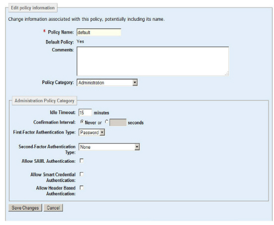

|
IdentityGuard Server 12.0 Administration Guide |
|
IdentityGuard Server 12.0 Administration Guide |
The built-in roles provided with Entrust IdentityGuard permit only an administrator with the superuser role to modify a policy (see Initial roles). Any administrator with a role that includes the policySet permission can accomplish this, too.
Changes to any policy that affects a user take effect the next time the user authenticates. Most changes to policies that affect the administrator are seen before the Administrator session ends.
By default, any changes made to a policy take effect when the administrator who changed the policy logs out. You can set the Cache Policy Settings property to No in the Properties Editor to make changes take effect immediately, depending on the setting of the Policy Repository Cache Timeout property. These settings may affect performance. (See Web Application Settings.)
Attention: When you modify a card or temporary PIN policy that is already in use, you may invalidate existing cards, temporary PINs, and other authentication data, and alter how client applications can use the Entrust IdentityGuard APIs. Ensure you update this information accordingly by, for example, issuing new cards to your users or testing your application to ensure it still works.
After you create a policy, you may need to:
● adjust the default or existing settings
● change its name to make it more descriptive
● modify the comments to differentiate it from other policies in your system
● change which policy is the default policy
Use the following procedure to complete these tasks.
1. Log in to the Entrust IdentityGuard Administration interface as the administrator.
 On the
Windows computer where Entrust IdentityGuard is installed
On the
Windows computer where Entrust IdentityGuard is installed
2. Select Policies on the menu bar.
3. Find the policy to modify (see Finding a policy).
The View Policy page appears and lists all policy settings.
4. On the View Policy page, click Edit Policy.
An editable version of the settings appear.
5. Change the basic policy settings—name, default status, comments—as applicable.
6. There are numerous policy categories. Select a category from the Policy Category list.
The Policy Category settings appear.

7. Change settings as applicable. For a description of each setting, see Policies quick reference.
For most options, you can change the settings by typing in a new value or selecting a check box.
In cases where an option allows you to add or remove multiple settings, select or deselect options as applicable. (See Selecting options).
Some policy settings for authentication methods, machine secrets and personal verification numbers appear in a two-column list. Those in the right-hand list are in effect (included). Those in the left-hand list are not in effect (not included). Buttons placed between the two lists allow you to move some or all options from one list to the other. (See Moving items between option lists.)
8. Click Save Changes.
The View Policy page reappears.
For additional details on editing policies for specific categories, see the following topics in later sections:
● Configuring biometrics policies
● Configuring authentication types
● Configure certificate authentication policies
● Configuring grid card policies
● Configuring grid card or token activation period policies
● Configuring lockout policies
● Configuring knowledge-based authentication policies
● Configuring machine authentication policies
● Configuring mutual authentication policies
● Configuring policies for out-of-band one-time password authentication
● Configuring password policies
● Configuring personal verification number policies
● Configuring repository data policies
● Configuring risk-based authentication policies
● Configuring shared secret policies
● Configuring temporary PIN policies
● Configuring transaction policies
● Configuring user data policies